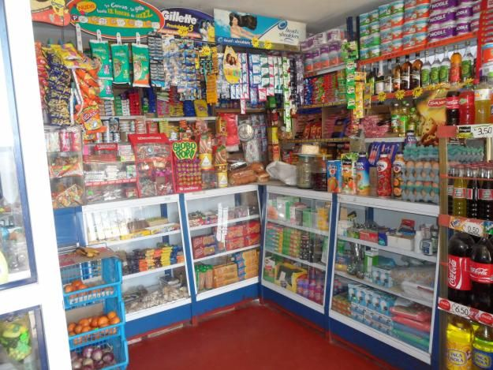

Bienvenidos a Abarrotes Sánchez
Claro, aquí tienes una descripción para una tienda de un rancho pequeño que acaba de empezar y quiere atraer clientes:
¡Bienvenidos a "Abarrotes Sánchez"!
Somos una pequeña tienda familiar recién inaugurada en el corazón de colonias 18 de marzo. Nos enorgullece ofrecer a nuestros vecinos y visitantes una selección cuidadosamente elegida de productos frescos y artículos esenciales para sus hogares.
En "Abarrotes Sánchez", nos apasiona brindar un servicio excepcional y una experiencia de compra cálida y acogedora. Nuestro equipo está listo para recibirlos con una sonrisa y ofrecerles un trato personalizado, como si fueran parte de nuestra propia familia.
Nos esforzamos por apoyar a los productores locales, por lo que en nuestras estanterías encontrarán una amplia variedad de frutas y verduras frescas, cultivadas con amor en los campos cercanos. Además, contamos con una selección de carnes de la más alta calidad, provenientes de granjas de la región.
Para complementar sus compras, ofrecemos una variedad de abarrotes básicos, productos de limpieza y artículos de primera necesidad. Así, podrán encontrar todo lo que necesitan en un solo lugar.
Pero eso no es todo. En "Abarrotes Sánchez", queremos convertirnos en un punto de encuentro para nuestra comunidad. Por eso, hemos habilitado un pequeño espacio acogedor donde podrán disfrutar de una refrescante bebida o un delicioso bocadillo mientras conversan con sus vecinos.
Estamos emocionados de formar parte de esta maravillosa comunidad y esperamos con ansias conocerlos a todos. Vengan a visitarnos y déjense cautivar por el encanto rústico y la calidez de "Abarrotes Sánchez".
¡Los esperamos con los brazos abiertos!
Nuestros Productos
Sobre Nosotros
Somos una empresa familiar dedicada a ofrecer los mejores productos a precios justos. Nos enorgullece brindar un excelente servicio a nuestros clienteAbarrotes Sánchez: El sabor de la tradición y la frescura en tu mesa En el corazón de nuestra querida comunidad, ha nacido un nuevo rincón que promete llenar tus alacenas con los sabores más auténticos y deliciosos productos: Abarrotes Sánchez..